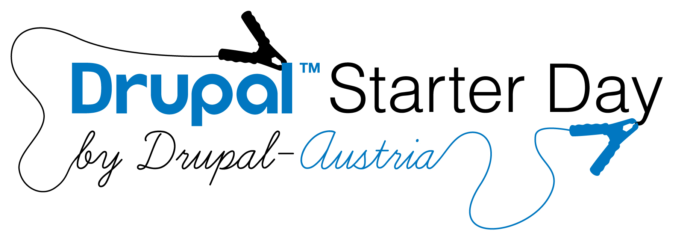

Willkommen! - #d8day
DRUPAL 8 STARTER DAY INTRO
#d8day
by Nico Grienauer @grienauer
Nico Grienauer
Nico Grienauer
Teilhaber
Gründer
Obmann Stellvertreter
Ambassador

Gefördert von
Unterstützt von
Unterstützt von
Unterstützt von
Unterstützt von
Unterstützt von
Unterstützt von
Unterstützt von
Event im Rahme der Codeweek.eu
11. - 17. Oktober 2014
55 Events in Österreich!
Organisiert von
Drupal Camp Vienna 2009
Drupal Starter Day 2011
Drupal Austria Roadshow 2012
Graz, Innsbruck, Klagenfurt, Linz, Wien + Linuxwochen
DrupalCamp Vienna 2013
300 Teilnehmer aus 25 Ländern
International?
über 2.000 Events Weltweit pro Jahr!
Global Training Days 2014
Dieses Jahr über 130 Trainings verteilt auf 3 Tage.
3 DrupalCons pro Jahr
- Februar 10-12, Bogotá - Colombia
- Mai 11-15, Los Angeles - California, USA
- September 21-25, Barcelona - Spain
Drupalcon Amsterdam 2014
2.300 Besucher!
44 Österreicher
Wo finde ich das nächste Event?
www.drupical.com
Drupal WTF?
- Modulares Open Source Framework
- PHP, MySQL/PostgreSQL/... (LAMP)
- über 2% aller Internetseiten benutzt Drupal (und ca 20% der Top 10.000 Webseiten!)
Vergleich zu anderen CMS Systemen
- Extrem flexibel und vielseitig
- Erweiterbar mit APIs, Themes und Modulen (über 15.000 kostenlose, werbefreie und voll funktionsfähige Module)
Vergleich zu anderen Frameworks
- Verwendung von Sub-Systemen erspart viel Entwicklungszeit
- Distributionen ermöglichen eine einfache Installation von vorkonfigurierten Systemen
Vergleich zu anderen Communities
- Sehr aktive und große Community
Über 1,000,000 User - Riesiges Ecosystem von Service Anbietern und Spezialisten
- PHP ist ein weit verbreitete Programmiersprache
Welche Seiten benutzen Drupal?
Neuerungen in Drupal 8
- Mobile ist in der DNA
Responsive Mobile First Ansatz - auch im Admin Bereich
- Multilingual Fähigkeiten
Alles ist Übersetzbar via User Interface und Aktualisierungen kommen Automatisch von der Community
- Neues Konfigurationsmanagement
Datei basierendes System, getrennt von der Datenbank
- Mehr Barrierefreiheit
Semantischen HTML 5, WAI-ARIA, TabManager, ...
Neuerungen in Drupal 8
- Bessere User Experience
Autoverfollständigung und everständliche Dialoge
- Eingebaute Web Services
Benutze Drupal als Datenquelle für Mobile Apps - HTTP authentifizierung, JSON Export, ...
- Einfaches Editieren und Schreiben von Inhalten
Direcktes editieren von Inhalten auf der Seite, ohne in den Editierbereich wechseln zu müssen
- Schnelles Theming bis ins kleinste Detail
verwendung der flexiblen, schnellen und vor allem sicheren Template Engine Twig
Neuerungen in Drupal 8
- Views, Out of the Box
Listen, Gallerien, Tabellen, Karten, Reports, ... können jetzt ohne Zusatzmodul erstellt werden
- Felder, Felder und noch mehr Felder
noch mehr Felder ohne Zusatzmodule vorhanden - Entity Referenzen, Liks, Datum, E-Mail, Telefonnummern,...
- Schöneres Markup mit HTML 5
erleichtert den Nativen Input für Mobilgeräte
- Industrie-Standardansatz
Objekt-Orientierter Code und PHP Standards - Inkludierung von Composer, PHPUnit, Guzzle,...
Unbegrenzte Möglichkeiten
Kostenlos
+ eine Community, die dich unterstützt!
Drupal-Austria Mitgliedschaft
25€ / Jahr